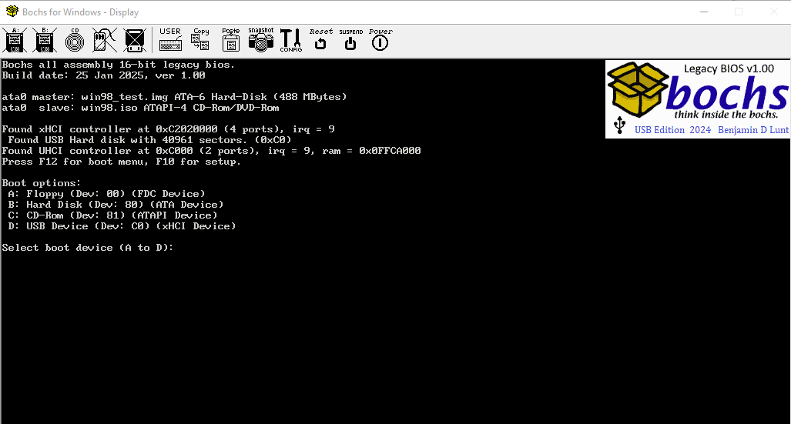
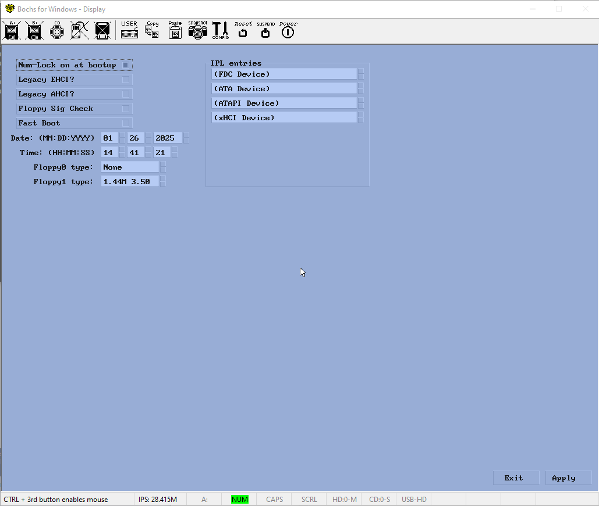

* *
* Copyright (c) 1984-2025 Forever Young Software Benjamin David Lunt *
* *
* i440FX BIOS ROM v1.0 *
* *
* This code is freeware, not public domain. Please use respectfully. *
* *
* You may: *
* - use this code for learning purposes only. *
* - use this code in your own Operating System development. *
* - distribute any code that you produce pertaining to this code *
* as long as it is for learning purposes only, not for profit, *
* and you give credit where credit is due. *
* *
* You may NOT: *
* - distribute this code for any purpose other than listed above. *
* - distribute this code for profit. *
* *
* You MUST: *
* - include this whole comment block at the top of this file. *
* - include contact information to where the original source is located. *
* https://github.com/fysnet/i440fx *
* *
Windows (Command Prompt):
To build this BIOS for BOCHS, from the i440fx directory, use the following commandline:
NBASM i440fx /x /z
This will produce i44fx.bin ready to be inserted into the emulation. It will also create a .lst file showing all of the references throughout the source code, useful for debugging.
To build this BIOS for Qemu, from the i440fx directory, use the following commandline:
NBASM i440fx /x /z /DBX_QEMU
You can exclude the /x parameter if you wish. If you exclude the /z parameter, NBASM will show a few diagnostic warnings. These can be ignored.
Linux:
Using additional resources, you can use NBASM on Linux.
I don't use Linux but a fellow user says you can use WINE to run NBASM. Just ignore the warning at the start and the end of the Wine output.
To build this BIOS for BOCHS, from the i440fx directory, use the following:
wine /path/to/program/nbasm64.exe /x /z i440fx
This will produce i44fx.bin ready to be inserted into the emulation. It will also create a .lst file showing all of the references throughout the source code useful for debugging.
To build this BIOS for Qemu, from the i440fx directory, use the following:
wine /path/to/program/nbasm64.exe /x /z /DBX_QEMU i440fx
You can exclude the /x parameter if you wish. If you exclude the /z parameter, NBASM will show a few diagnostic warnings. These can be ignored.
bochsrc.txt file:
romimage: file=$BXSHARE/bios/i440fx/i440fx.bin
romimage: file=$BXSHARE/bios/i440fx/i440fx.bin, flash_data="escd.bin"
If you haven't set the $BXSHARE parameter to point to the Bochs directory, change the above to point directly to the binary file.
The second example will use the ESCD (Extended System Configuration Data) data given in the escd.bin file. See the ESCD section for more on this.
If the file doesn't exist, this BIOS will create one using defaults.
It is recommended that you use the following addition:
cpu: model=pentium
-bios C:\path\to\this\bios\i440fx_qemu.bin
It is recommended that you use the following addition:
-cpu pentium3-v1
The following has been known to work, but not completely supported:
-machine q35
Depending on the settings, you will have just a few seconds to press either F10 or F12.
If you press F10, the setup will be shown. See the ESCD section for more on this.
If you press F12, you will be shown a list of found bootable devices. Press the letter next to the device you wish to boot.
If you include an ESCD file to use (see a previous section), this BIOS will use the contents of that file for settings and other data during boot time. If you did not include a file, defaults will be used.
This file and the data within it is used for various items throughout the boot.
The Setup page:
The setup page appears when you press F10 at the boot prompt.

To boot a USB device, use the following in your bochsrc.txt file:
boot: usb
Then depending on the USB controller used:
usb_uhci: port1=floppy, options1="speed:full, path:some/path/floppy.img, model:teac"
To boot a floppy or other drive using another controller, use a very similar line:
usb_ohci: port2=cdrom, options2="speed:full, path:../common/bootcd.iso"
usb_ehci: port1=disk, options1="speed:high, path:../common/hdd.img, proto:bbb"
usb_xhci: port1=disk, options1="speed:super, path:../common/hdd.img, proto:bbb"
Remember that each controller other than the UHCI requires the slotx= addition in the pci declaration:
pci: enabled=1, chipset=i440fx, slot1=usb_ohci
This BIOS will do a few calculations on a given USB image file determining how to boot said file.
byte[0] == 0xEB and byte[2] == 0x90 ; jmp short xxxx
or
byte[0] == 0xE9 and word[1] < 0x1FE ; jmp near xxxx
word at [19] == 2880 ; sectors
or
word at [19] == 0 && dword at [32] == 2880 ; extended sectors
If all of the above is true, no matter the size of the HDD image, this BIOS will mount it as a 1.44M floppy disk.
Depending on the media (Eltorito Boot included?)
Latest Update: 27 Jan 2025, 17.08